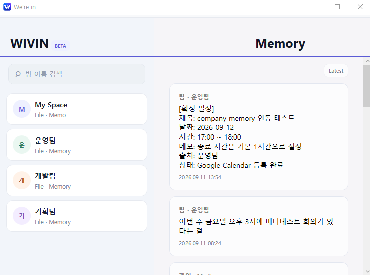
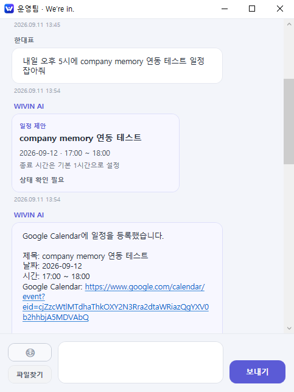

대화가 업무의 출발점이 됩니다.
메시지와 파일이 오가는 기존 협업 흐름 안에서 필요한 업무 맥락을 이어갑니다.
대화에서 시작된 업무를
사람의 권한과 승인 아래 실행합니다.
WIVIN은 팀의 대화를 AI가 이해하고, 중요한 행동은 사람의 결정 아래 실행하며, 완료된 결과와 맥락을 조직의 기억으로 남기는 AI 업무 실행 환경입니다.
Current stage Windows Private Beta 준비 중

WIVIN에서 AI는 대화를 이해하고 다음 행동을 연결합니다. 그러나 중요한 실행의 권한은 사람과 조직의 정책에 남습니다.
목표는 사람을 의사결정에서 제거하는 것이 아니라, 반복되는 확인과 실행의 마찰을 줄이는 것입니다.
별도의 AI 화면에서 업무를 다시 입력하는 대신, 팀이 이미 하고 있는 대화에서 시작해 승인·실행·기억까지 이어지는 구조입니다.
메시지와 파일이 오가는 기존 협업 흐름 안에서 필요한 업무 맥락을 이어갑니다.
실행 전에 권한과 승인 단계를 두어 AI의 제안과 사람의 결정을 분리합니다.
현재 제품에서는 Calendar Action 등 대화에서 실제 행동으로 이어지는 흐름을 검증하고 있습니다.
업무가 끝난 뒤에도 중요한 맥락과 결과가 다음 업무의 출발점이 되도록 연결합니다.
이 페이지에는 현재 WIVIN Windows 제품의 실제 화면만 사용합니다. 홍보용으로 만든 가상 UI나 아직 존재하지 않는 기능 화면은 사용하지 않습니다.

팀의 대화와 파일이 같은 업무 맥락 안에서 이어지는 Windows 업무 메신저 기반.
개인 업무 자료와 파일을 다시 찾고 보관할 수 있는 개인 작업 공간과 파일 흐름.
중요한 실행 전에 사람의 승인을 두고, 대화에서 일정 Action으로 연결하는 흐름.
중요한 맥락과 실행 결과를 다시 활용할 수 있도록 연결하는 Memory 기반.
대화에서 요청이 시작되고, 담당자의 확인과 승인 이후 후속 업무로 이어지는 흐름.
대화와 업무 맥락에서 필요한 보고 정보를 정리하고 조직의 확인 절차와 연결하는 방향.
기존 조직의 자료와 업무 맥락을 다음 구성원의 업무 시작점으로 연결하는 방향.
위 항목은 현재 제공 기능을 의미하지 않습니다. WIVIN의 기존 Conversation → Approval → Action → Memory 구조가 확장할 수 있는 제품 방향입니다.
현재 WIVIN은 외부 배포 전에 제품 안정성, 보안 경계, 핵심 승인 흐름, Action과 Memory의 연결을 검증하고 있습니다.
아직 검증되지 않은 기능이나 외부 사용 실적을 현재 성과처럼 표현하지 않습니다.
WIVIN이 만들고 있는 것은 더 많은 자동화 버튼이 아니라, 대화와 사람의 권한, 실제 실행, 조직의 기억이 끊기지 않는 업무 환경입니다.